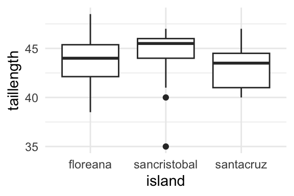

Consider a data set about finches (little birds) from the Galapagos islands. We’ll consider the variables beakwidth measured in millimeters (mm), taillength also in mm, and island.

Df Sum Sq Mean Sq F value Pr(>F)
island - 14.6734 7.3367 1.0632 0.3513
Residuals 65 448.5518 6.9008 - -
Call:
lm(formula = taillength ~ island, data = df)
Residuals:
Min 1Q Median 3Q Max
-9.4667 -1.4769 0.3333 1.5026 4.4923
Coefficients:
Estimate Std. Error t value Pr(>|t|)
(Intercept) 44.0077 0.5152 85.421 <2e-16 ***
islandsancristobal 0.4590 0.7218 0.636 0.527
islandsantacruz -0.7744 0.8517 -0.909 0.367
---
Signif. codes: 0 '***' 0.001 '**' 0.01 '*' 0.05 '.' 0.1 ' ' 1
Residual standard error: 2.627 on 65 degrees of freedom
Multiple R-squared: 0.03168, Adjusted R-squared: 0.001882
F-statistic: 1.063 on 2 and 65 DF, p-value: 0.3513
Write three sentences about three different statistics from the box plot above. Each sentence must be about a different island.
The median tail length for finches from Floreana is about 44mm. The minimum tail length for finches from San Cristobal is about 35mm. The third quartile of tail length for finches from the island Santa Cruz is about 44mm.
Write the null and alternative hypotheses for ANOVA based on the box plot above. Specify a level of significance.
\(H_0: \mu_f = \mu_l = \mu_z\)
\(H_1:\) at least one mean is different
\(\alpha = 0.05\)
Compare the p-value to the level of significance and make a conclusion.
The p-value \(= 0.3513 > \alpha = 0.05\). Therefore fail to reject \(H_0\).
Interpret your conclusion in context of the data.
The mean tail lengths of finches from three islands are nearly equivalent.
What should the degrees of freedom for island be for the ANOVA above?
number of groups - 1 $ = 2$
Reproduce the F statistic (named F.value in the output above).
\(7.3367 / 6.9008\)
Write down the fitted regression equation for the model above.
Using Tukey’s HSD, write down appropriate null and alternative hypotheses for one comparison. Make a conclusion by quoting an appropriate p-value and then interpret your conclusion in context of the data.
Silly, Edward, Tukey’s HSD isn’t appropriate here since we failed to reject the null hypothesis from ANOVA.
When beakwidth is equal to 0mm, we expect the tail length of the finches to be statistically significantly different from zero, and specifically to be about 31.59mm.
Write down the fitted regression equation for the model above.
Interpret in context of the data a 95% confidence interval for a prediction of the mean taillength based on the output above.
We are 95% confident that when a finch from any of these three islands has a beak width of 5mm, we expect that tail length to be between 36.16 and 39.24mm.
Without doing any calculations, write the regression equation for the prediction above.
\(31.59 + 1.22 * 5\)
Name two ways to make more narrow the width of a confidence interval for a mean taillength?
increase the sample size (the number of data),
decrease the confidence level,
for linear regression, make a confidence interval from a prediction (of a mean) closer to the mean of the x-axis (beakwidth, in this case) variable.
Here is pseudo-code for a function that would be passed to optim, R’s built in optimization function, in order to calculate linear regression coefficients. Explain what each line of code is doing.
ll_lm <-function(theta, data) { # declare function of two variables, optim will minimize over the first x <- data$x # extract x-axis variable from data y <- data$y # extract y-axis variable from data yhat <- theta[1] + theta[2] * x # make prediction from line on x r <- y - yhat # calculate residualsreturn(sum( r ^2 )) # sum of squared residuals, scalar to be minimized}
Source Code
---title: "MATH 456 Practice Exam 01 Solutions, Spring 26"format: htmleditor: source---```{r, echo=FALSE}library(ggplot2)suppressMessages(library(dplyr))df <-read.csv("https://raw.githubusercontent.com/roualdes/data/refs/heads/master/finches.csv")```Consider a data set about finches (little birds) from the Galapagos islands. We'll consider the variables `beakwidth` measured in millimeters (mm), `taillength` also in mm, and `island`.<!--# EAR -->```{r}#| echo: false#| fig-width: 3#| fig-height: 2#| fig-align: center#| warning: falseggplot(df, aes(island, taillength)) +geom_boxplot() +theme_minimal()fita <-lm(taillength ~ island, data = df)dfa <-as.data.frame(lapply(as.data.frame(anova(fita)), \(x) if(is.numeric(x)) { round(x, 4)} else {x}))colnames(dfa) <-c("Df", "Sum Sq", "Mean Sq", "F value", "Pr(>F)")rownames(dfa) <-c("island", "Residuals")dfa$`F value`[2] ="-"dfa$`Pr(>F)`[2] ="-"dfa$`Df`[1] ="-"print(dfa)summary(fita)TukeyHSD(aov(fita))```1. Write three sentences about three different statistics from the box plot above. Each sentence must be about a different island. The median tail length for finches from Floreana is about 44mm. The minimum tail length for finches from San Cristobal is about 35mm. The third quartile of tail length for finches from the island Santa Cruz is about 44mm.2. Write the null and alternative hypotheses for ANOVA based on the box plot above. Specify a level of significance. $H_0: \mu_f = \mu_l = \mu_z$ $H_1:$ at least one mean is different $\alpha = 0.05$3. Compare the p-value to the level of significance and make a conclusion.The p-value $= 0.3513 > \alpha = 0.05$. Therefore fail to reject $H_0$.4. Interpret your conclusion in context of the data.The mean tail lengths of finches from three islands are nearly equivalent.5. What should the degrees of freedom for `island` be for the ANOVA above?number of groups - 1 \$ = 2\$6. Reproduce the F statistic (named F.value in the output above).$7.3367 / 6.9008$7. Write down the fitted regression equation for the model above.$\widehat{taillength} = 44.01 + 0.461_l - 0.77 1_z$8. Using Tukey's HSD, write down appropriate null and alternative hypotheses for one comparison. Make a conclusion by quoting an appropriate p-value and then interpret your conclusion in context of the data.Silly, Edward, Tukey's HSD isn't appropriate here since we failed to reject the null hypothesis from ANOVA.```{r}predict(fita, newdata =data.frame(island ="floreana"))```9. Still using the ANOVA model from above, named `fita`, interpret the prediction in context of the data. We expect a finch from Floreana to have a tail length of around 44.01mm.10. Explain why all finches from the island Floreana have the same prediction for this model. ANOVA as a predictive model, predicts each group (island, in this case) by the group mean. The mean for finches from Floreana is 44.01mm.```{r}#| echo: false#| fig-width: 3#| fig-height: 2#| fig-align: center#| warning: falseggplot(df, aes(beakwidth, taillength)) +geom_point() +theme_minimal()fitl <-lm(taillength ~ beakwidth, data = df)summary(fitl)confint(fitl, level =0.9)```11. Write the null and alternative hypotheses for the hypothesis test of the intercept. Specify a level of significance.$H_0: \beta_0 = 0$$H_1: \beta_0 \ne 0$$\alpha = 0.05$12. Make the appropriate conclusion from the hypothesis test above. Quote the appropriate p-value.p-value $< 0.0001 < \alpha = 0.05$, therefore reject $H_0$.13. Interpret your conclusion in context of the data.When `beakwidth` is equal to 0mm, we expect the tail length of the finches to be statistically significantly different from zero, and specifically to be about 31.59mm.14. Write down the fitted regression equation for the model above.$\widehat{taillength} = 31.59 + 1.22 * beakwidth$15. Interpret adjusted $R^2$ in context of the data.$51.92$% of the variation in `taillength` is explained by this linear regression model on `beakwdith`.16. Provide two reasons $R^2$ is worse than adjusted $R^2$?<!-- -->i. $R^2$ goes up (inappropriately) even when poor predictors are added to the model.ii. $R^2$ provides a more clearly biased estimate of the percent of the variation that is accounted for by the linear model.<!-- -->17. Interpret in context of the data a 90% confidence interval for the intercept. We are 90% confident that when beakwidth is equal to 0mm, the tail length of finches from any of these three islands is between 29.14 and 34.04mm.18. Does the intercept make sense in context of the data. Why or why not? Not really, as there are not likely to be any living finches with a beak width of 0mm.```{r}predict(fitl, newdata=data.frame(beakwidth=5), interval="confidence")```19. Interpret in context of the data a 95% confidence interval for a prediction of the mean `taillength` based on the output above. We are 95% confident that when a finch from any of these three islands has a beak width of 5mm, we expect that tail length to be between 36.16 and 39.24mm.20. Without doing any calculations, write the regression equation for the prediction above. $31.59 + 1.22 * 5$21. Name two ways to make more narrow the width of a confidence interval for a mean `taillength`? i. increase the sample size (the number of data), ii. decrease the confidence level, iii. for linear regression, make a confidence interval from a prediction (of a mean) closer to the mean of the x-axis (beakwidth, in this case) variable.22. Here is pseudo-code for a function that would be passed to `optim`, `R`'s built in optimization function, in order to calculate linear regression coefficients. Explain what each line of code is doing.```{r}ll_lm <-function(theta, data) { # declare function of two variables, optim will minimize over the first x <- data$x # extract x-axis variable from data y <- data$y # extract y-axis variable from data yhat <- theta[1] + theta[2] * x # make prediction from line on x r <- y - yhat # calculate residualsreturn(sum( r ^2 )) # sum of squared residuals, scalar to be minimized}```